기계설계산업기사 (2008-03-02 기출문제)
1과목: 기계가공법 및 안전관리
1. 절삭공구의 구비조건으로 틀린 것은?
- 취성이 클 것
- 마찰계수가 작을 것
- 내마모성이 클 것
- 고온에서 경도가 감소하지 않을 것
(정답률: 73%)

2. 구성인성(built-up edge)에 대한 일반적인 설명으로 틀린 것은?
- 절삭 저항이 커진다.
- 가공 면을 거칠게 한다.
- 바이트의 수명을 짧게 한다.
- 절삭속도를 작게 하면 방지된다.
(정답률: 75%)
3. 절삭유제의 사용 목적에 대한 일반적인 설명으로 틀린 것은?
- 철삭공구를 냉각시켜 공구의 경도저하를 막는다.
- 칩의 제거를 용이하게 하여 절삭작업을 쉽게 한다.
- 공구의 마모를 줄이고 윤활 및 세척작용으로 가공 표면을 좋게 한다.
- 공구와 가공물의 친화력 향상으로 정밀도를 높게 한다.
(정답률: 71%)
4. 터릿 선반(turret lathe) 등에 널리 사용되며, 보통 선반에서는 주축의 테이퍼 구멍에 슬리브를 꽂은 다음 여기에 끼워 사용하는 것은?
- 연동척
- 마그네틱척
- 콜릿척
- 단동척
(정답률: 68%)
5. 다음 중 선반 베드의 재질로 가장 적합한 것은?
- 고급 구철
- 탄소 공구강
- 연강
- 초경합금강
(정답률: 50%)
6. 수평 밀링 머신의 주축(spindle)에 대한 설명 중 틀린 것은?
- 보통 테이퍼 롤러 베어링으로 지지되어 있다.
- 기둥(column)에 설치되어 있으며 아버를 고정한다.
- 주축 끝에 코터가 장치되어 있어 커터의 중심을 맞춘다.
- 주축단은 보통 테이퍼진 구멍으로 되어 있으며 크기는 규격으로 정해져 있다.
(정답률: 40%)
7. 암나사를 가공하는 탭(tap)을 사용하여 가공할 때 일반적으로 최종 다듬질에 사용하는 것은?
- 3번 탭
- 2번 탭
- 1번 탭
- 0번 탭
(정답률: 61%)
8. 다음 중 작업자의 복장으로 적당하지 않는 것은?
- 기름이 밴 작업복은 입지 않는다.
- 수건은 허리춤에 꼭 맞게 끼거나 목에 감는다.
- 작업복의 소매와 바지의 단추를 잠근다.
- 상의의 옷자락이 밖으로 나오지 않도록 한다.
(정답률: 89%)
9. 한계 게이지 측정방식의 특징 중 잘못된 것은?
- 개인차가 없고 측정 시간이 절약된다.
- 경험이 필요치 않다.
- 측정이 쉽고 대량 생산에 적합하다.
- 눈금이 없어 측정 실패율이 높다.
(정답률: 65%)
10. 밀링에서 상향절삭과 비교한 하향절삭 작업의 장점에 대한 설명이다. 틀린 것은?
- 공구의 수명이 길다.
- 가공물 고정이 유리하다.
- 앞으로 가공할 면을 잘 볼 수 있어서 좋다.
- 백 래시를 제거하지 않아도 된다.
(정답률: 84%)
11. 세이퍼에서 램의 왕복 속도는 어떠한가?
- 일정하다.
- 귀환 행정일 때가 늦다.
- 절삭 행정일 때가 빠르다.
- 귀환 행정일 때가 빠르다.
(정답률: 59%)
12. 일감에 회전운동과 이송을 주며, 숫돌을 일감표면에 약한 압력으로 눌러 대고 다듬질할 면에 따라 매우 작고 빠른 진동을 주어 가공하는 방법은?
- 슈퍼피니싱
- 래핑
- 드릴링
- 드레싱
(정답률: 81%)
13. 호방머신에서 호브의 절삭속도를 v(m/min), 호브의 바깥지름을 d(mm)라 하면, 호브의 회전수 n(rpm)을 나타내는 식은?
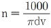
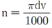
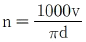
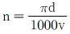
(정답률: 82%)
14. CNC장치의 일반적인 정보 흐름으로 옳은 것은?
- NC명령→제어장치→서보기구→NC가공
- 서보기구→NC명령→제어장치→NC가공
- 제어장치→NC명령→서보기구→NC가공
- 서보기구→제어장치→NC명령→NC가공
(정답률: 56%)
15. 드릴작업할 때 절삭속도 25m/min, 그릴지름 22mm, 이송 0.1mm/rev, 드릴 끝의 원추높이가 6mm일 경우 깊이 100mm인 구멍을 뚫을 때 소요시간은 약 몇 분 인가?
- 8.76
- 6.43
- 4.72
- 2.93
(정답률: 33%)
16. 연삭 중 어느 정도 숫돌입자가 마멸되면 결합제의 결합도가 저항에 견디지 못하고 숫돌에서 탈락하여 새로운 날로 바뀌는 것이 숫돌의 특징이다. 이러한 현상을 무엇이라고 하는가?
- 로딩
- 트루잉
- 자생작용
- 글레이징
(정답률: 58%)
17. 그림과 같은 사인바의 H 값을 구하는 공식은?
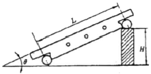
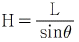
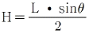
- H=Lㆍsinθ
- H=2(Lㆍsinθ)
(정답률: 45%)
18. 다음 중 영국식 선반 베드의 단면 형상은?
- 산형
- 평형
- 절충형
- 벌형
(정답률: 53%)
19. 연삭 작업에서 연삭 숫돌의 입자가 무디어 지거나 눈 메움이 생기면 연삭 능력이 저하되므로 숫돌의 예리한 날이 나타나도록 가공하는 작업을 무엇이라 하는가?
- 시닝
- 드레싱
- 글레이징
- 로딩
(정답률: 56%)
20. 다음 중 금긋기 작업 공구로 가장 거리가 먼 것은?
- 서피스게이지
- 콤파스
- V 블록
- 광선정반
(정답률: 50%)
2과목: 기계제도
21. 다음 중 "KS B 1101 둥근머리 리벳 15×40SV 40“으로 표시된 리벳의 호칭 도면의 해독으로 가장 적합한 것은?
- 리벳 구멍 15개, 리벳 지름 40mm
- 리벳 지름 15mm, 리벳 길이 40mm
- 리벳 지름 40mm, 리벳 길이 15mm
- 리벳 피치 15mm, 리벳 구멍 지름 40mm
(정답률: 74%)
22. 구멍과 축이 끼워맞춤 상태에 있을 때 기준치수와 각각의 치수허용차의 기호 기입이 옳은 것은?
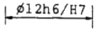
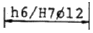
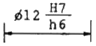
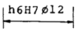
(정답률: 45%)
23. 다음 중 ø50H7의 기준구멍에 가장 헐거운 끼워맞춤이 되는 축의 공차 기호는?
- ø50 f6
- ø50 n6
- ø50 m6
- ø50 p6
(정답률: 71%)
24. 다음 기하 공차 기호 중 데이텀을 적용해야 되는 것은?
- ○
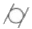
- ∠
- ▱
(정답률: 51%)
25. 다음 표면기호를 보고 가공모양의 기호를 올바르게 해독한 것은?
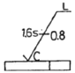
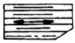
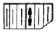
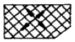
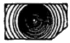
(정답률: 69%)
26. 제3각법으로 정투상한 보기 투상도인면의 실제형상 및 작업 내용에 가장 적합한 입체도는?
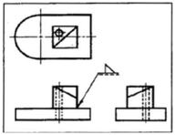
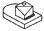
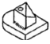
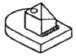
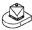
(정답률: 72%)
27. 일반 구조용 압연강재의 KS재료기호는?
- SPS
- SBC
- SS
- SM
(정답률: 81%)
28. 가공방법의 기호가 G로 표시된 것은 무엇을 나타내는가?
- 연삭
- 선삭
- 평삭
- 형삭
(정답률: 79%)
29. 보기 그림과 같은 부등변 ㄱ형강의 치수 표시방법은? (단, 길이는 ℓ이다.)
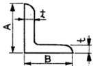
- L A×B×t-l
- L t×A×B×l
- L B×A+2t-l
- L A+B×t/2-l
(정답률: 89%)
30. 보기와 같은 정면도와 평면도에 가장 적합한 우측면도는?
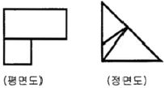
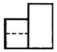
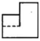
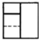
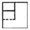
(정답률: 40%)
31. 보기 입체도를 3각법으로 정투상한 투상도에 대한 설명으로 올바른 것은?
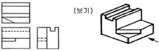
- 모두 올바르다.
- 평면도만 틀렸다.
- 정면도만 틀렸다.
- 우측면도만 틀렸다.
(정답률: 66%)
32. 다음의 가공 방법 중에서 표면 조도가 가장 정밀하게 나오는 가공 방법은?
- 단조
- 래핑
- 밀링
- 선삭
(정답률: 65%)
33. 기하 공차의 종류에서 위치 공차에 해당되지 않는 것은?
- 등축도 공차
- 위치도 공차
- 평면도 공차
- 대칭도 공차
(정답률: 68%)
34. 보기 도면은 제3각법으로 정투상한 정면도와 평면도이다. 우측면도로 가장 적합한 것은?
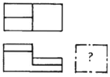
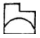
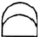
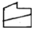
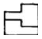
(정답률: 44%)
35. 보기 도면의 선반작업 설명과 일치하지 않는 것은?
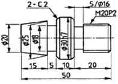
- ø16mm를 폭 5mm로 가공
- 전체길이가 50mm 되게 가공
- 45° 모따기를 2mm 되게 두 곳을 작업
- 애크미나사의 유효지름 20mm를 두 줄 나사로 가공작업
(정답률: 63%)
36. 지름이 같은 두 원통을 90°로 교차시킬 경우 상관선은?
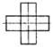
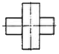
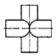
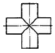
(정답률: 85%)
37. 보기 입체도를 화살표 방향에서 본 투상 도면으로 가장 적합한 것은?
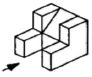
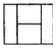
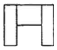
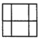
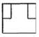
(정답률: 80%)
38. 보기 입체도에서 화살표 방향을 정면도로 할 경우 평면도로 올바른 것은?
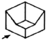
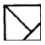
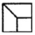
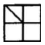
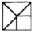
(정답률: 92%)
39. 스퍼기어에서 피치원의 지름이 150mm이고, 잇수가 50일 때 모듈(module)은?
- 5
- 4
- 3
- 2
(정답률: 78%)
40. 보기는 제3각 정투상도에서 정면도와 우측면도이다. 평면도로 가장 적합한 것은?
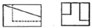
(정답률: 65%)
3과목: 기계설계 및 기계재료
41. 다음 중 절삭 공구용 특수강은?
- Ni-Cr 강
- 불변강
- 내열강
- 고속도강
(정답률: 78%)
42. 탄소강에서 적열취성이 원인이 되는 원소는?
- 규소
- 망간
- 인
- 황
(정답률: 64%)
43. 열간가공과 비교하여 냉간가공의 장점은 무엇인가?
- 작업능률이 양호하다.
- 가공에 필요한 동력이 적게 소모된다.
- 제품 표면이 아름답다.
- 단시간 내 완성이 가능하다.
(정답률: 37%)
44. 탄소가 0.25%인 탄소강의 기계적 성질을 0~500℃ 사이에서 조사하면 200~300℃에서 인장강도가 최대치를, 연신율이 최저치를 나타내며 가장 취약하게 되는 현상은?
- 고운취성
- 상온 충격치
- 청열취성
- 탄수강 충격값
(정답률: 84%)
45. 비중이 1.74정도이며, 가벼워 항공기 및 자동차 부품 등에 사용되는 합금의 재료는?
- Sn
- Cu
- Mg
- Ni
(정답률: 51%)
46. 다음 회주철에 대한 설명 중 틀린 것은?
- 인장력에 약하고 깨지기 쉽다.
- 탄소강에 비해 진동에너지의 흡수가 되지 않는다.
- 주조와 절삭가공이 쉽다.
- 유동성이 좋아 복잡한 형태의 주물을 만들 수 있다.
(정답률: 39%)
47. 순철(α철)의 격자구조는?
- 면심입방격자
- 면심정방격자
- 체심입방격자
- 조밀육방격자
(정답률: 45%)
48. 철공용 줄(file)의 재질로 가장 적합한 것은?
- 고속도강
- 탄소공구강
- 세라믹
- 연강
(정답률: 57%)
49. 가공용 알루미늄합금 중 항공기나 자동차 몸체용 고강도 Al-Cu-Mg-Mn계의 합금은?
- 두랄루민
- 하이드로날륨
- 라우탈
- 실루민
(정답률: 73%)
50. 다음 중 주철의 흑연발생 촉진 원소는 어느 것인가?
- Si
- Mn
- P
- S
(정답률: 38%)
51. 다음 중 표준스퍼 기어에서 이의 크기가 가장 큰 것은? (단, m:모듈, P:지름피치이다.)
- P=10
- P=12
- m=2
- m=2.5
(정답률: 25%)
52. 다음 그림과 같은 원통코일 스프링의 처짐량 δ=60mm일 때 작용하는 하중 W는 몇 kgf인가? (단, 스프링 상수 k1=6kgf/cm, k2=2kgf/cm이다.)
- 4kgf
- 6kgf
- 9kgf
- 48kgf
(정답률: 44%)
53. 축의 홈이 깊게 파여 축의 강도가 약하게 되기는 하나 키와 키홈 등이 모두 가공하기 쉽고 키가 자동적으로 축과 보스 사이에 자리를 잡을 수 있어 자동차, 공작기계등의 축에 널리 사용되며 특히 테이퍼 축에 사용하면 편리한 키는?
- 둥근 키
- 접선 키
- 묻힘 키
- 반달 키
(정답률: 40%)
54. V 벨트를 평벨트와 비교한 특징이다. 틀린 것은?
- 전동효율이 좋다.
- 출간거리를 더 멀리 할 수 있다.
- 고속운전이 가능하다.
- 정숙한 운전이 가능하다.
(정답률: 67%)
55. 사각형 단면(100mm×60mm)의 기둥에 10kgf/cm2 압축응력이 발생할 때 압축하중은 약 얼마인가?
- 6000kgf
- 600kgf
- 60kgf
- 60000kgf
(정답률: 43%)
56. 반복하중을 받는 스프링에서는 그 반복속도가 스프링의 고유진동수에 가까워지면 심한 진동을 일으켜 스프링의 파손 원인이 된다. 이 현상을 무엇이라 하는가?
- 자유높이
- 스프링상수
- 비틀림모멘트
- 서징
(정답률: 50%)
57. 재료에 높은 온도로 큰 하중을 일정하게 작용시키면 응력이 일정해도 시간의 경과에 따라 변형률이 증가하는 현상은?
- 크리프현상
- 시효현상
- 응력집중현상
- 피로파손현상
(정답률: 40%)
58. 3중 나사에서 나사를 3회전 하였더니 36mm 전진하였다. 이 나사의 피치는?
- 12mm
- 6mm
- 4mm
- 3mm
(정답률: 51%)
59. 축을 설게할 때 고려해야 할 사항이 아닌 것은?
- 강도 및 변형
- 진동
- 회전방향
- 열응력
(정답률: 60%)
60. 역류를 방지하여 유체를 한쪽 방향으로만 흘러가게 하는 밸브를 무슨 밸브라 하는가?
- 콕밸브
- 체크밸브
- 게이트밸브
- 안전밸브
(정답률: 77%)
4과목: 컴퓨터응용설계
61. CAD의 주변 기기 중 스토리지형 CRT의 장점이 아닌 것은?
- 플리커 현상이 발생하지 않는다.
- 고정밀도이며 디스플레이된 영상을 부분적으로 편집할 수 있다.
- 도형을 화면상에 일정시간 저장이 가능하다.
- 표시할 수 있는 도형의 양에 제한이 없다.
(정답률: 33%)
62. 도형 데이터를 입력하기 위하여 화면과 대응된 좌표를 가진 보드 형태의 입력 장치는?
- USB메모리
- 무선 키보드
- 디지타이저
- 디지털카메라
(정답률: 60%)
63. 다음 중 CAD/CAM 시스템에서 출력장치는?
- 마우스
- 라이트펜
- 플로터
- 조이스틱
(정답률: 88%)
64. 다음 중 BCD코드 체계를 설명한 것이다. 틀린 것은?
- 문자를 표현하기 위하여 6개의 비트를 사용한다.
- 하위(오른쪽) 4개의 비트는 문자를 구분하는 디짓비트(digit bit)이다.
- 컴퓨터 시스템 내부에서 자료를 처리하기 위해 사용되는 2진법 체계이다.
- BCD 코드 체계에서 표현할 수 있는 문자의 개수는 128개이며, 에러 검출이 가능한 코드이다.
(정답률: 50%)
65. 다음 중 CAD 그래픽 소프트웨어의 기본 기능이 아닌 것은?
- 그래픽 형상 작성 기능
- 데이터 변환 기능
- 디스플레이 제어 기능
- 수치제어 가공 기능
(정답률: 62%)
66. NURBS(Non-Uniform Rational B-Spline)에 관한 설명으로 잘못된 것은?
- NURBS 곡선식은 일반적인 B-Spline 곡선식을 포함하는 더 일반적인 형태라고 할 수 있다.
- B-Spline에 비하여 NURBS곡선이 보다 자유로운 변형이 가능하다.
- 곡선의 변형을 위하여 NURBS곡선에서는 조정점의 x, y, z의 3개의 자유도만 허용한다.
- NURBS 곡선은 자유곡선뿐만 아니라 원추곡선까지 한 방정식의 형태로 표현이 가능하다.
(정답률: 61%)
67. 일반적인 CAD 시스템에서 원을 정의하는 방법이 아닌 것은?
- 중심과 반지름
- 중심과 원주상의 한점
- 원주상의 3점
- 정점과 초점
(정답률: 64%)
68. 다음 중 y축과의 절편이 10이고, x축과 45°를 이루는 직선의 방정식은?
- y=x+10
- y=10-0.5x
- y=0.7x+10
- y=0.7+x
(정답률: 46%)
69. 2X-3Y+7=0과 평행한 직선이 아닌 것은?
- 3X-5Y+9=0
- 4X-6Y+5=0
- 9Y-6X+11=0
(정답률: 45%)
70. 행렬 A= 와 B= 의 곱 AB는?
(정답률: 50%)
71. 그림과 같은 직선 A, B를 X, Y 방향으로 각각 2배 확대 변환 후 결과를 나타낸 좌표는?
(정답률: 72%)
72. 심미적 곡면 중 단면이 안내곡선을 따라 이동하여 형성하는 형태의 곡면을 무엇이라고 하는가?
- Sweep형 곡면
- Grid 곡면
- Patch 곡면
- Blending 곡면
(정답률: 67%)
73. 상이한 CAD 시스템 간의 데이터의 교환을 목적으로 개발된 표준데이터 교환 방식이 아닌 것은?
- GKS
- HWP
- STEP
- IGES
(정답률: 72%)
74. 원통 좌표계에서 표시된 점의 위치가 (r, θ, z)이다. 이 위치를 직교 좌표계로 표시한 결과는?
- x=rㆍcosθ, y=rㆍsinθ, z
- x=rㆍsinθ, y=rㆍcosθ, z
- x=-rㆍsin2θ, y=rㆍcos2θ, z
- x=rㆍcos2θ, y=rㆍsin2θ, z
(정답률: 42%)
75. 공간상에 존재하는 2개의 곡면이 서로 교차하는 경우, 교차되는 부분에서 모서리(edge)가 발생하는데, 이 모서리(edge)를 주어진 반경을 갖고 부드럽게 처리하는 기능을 무엇이라고 하는가?
- intersecting
- projecting
- blending
- stretching
(정답률: 86%)
76. 다음 중 서피스 모델링(surface modeling)의 특징을 설명한 것이다. 틀린 것은?
- 은선 제거가 가능하다.
- 물리적 성질의 계산이 간단하다.
- NC 데이터를 생성할 수 있다.
- 면과 면의 교선을 구할 수 있다.
(정답률: 66%)
77. 다음 중 불 연산(boolean operation)이 아닌 것은?
- Union(합)
- Subtract(차)
- Intersect(적)
- Project(투영)
(정답률: 70%)
78. 주어진 양 끝점만 통과하고 중간의 점은 조정점의 영향에 따라 근사하고 부드럽게 연결되는 선은?
- Bezier 곡선
- Spline 곡선
- Polygonal line
- 퍼거슨 곡선
(정답률: 45%)
79. 다음은 공학적 해석(부피, 무게중심, 관성모멘트 등의 계산)을 적용할 때 쓰는 가장 적합한 모델은?
- 슬리드 모델
- 서피스 모델
- 와이어프레임 모델
- 데이터 모델
(정답률: 73%)
80. 3차원 솔리드 모델을 구성하는 요소 중 기본 형상(Primitive)이라고 할 수 없는 것은?
- 구(Sphere)
- 원통(Cylinder)
- 직선(Line)
- 원추(Cone)
(정답률: 67%)